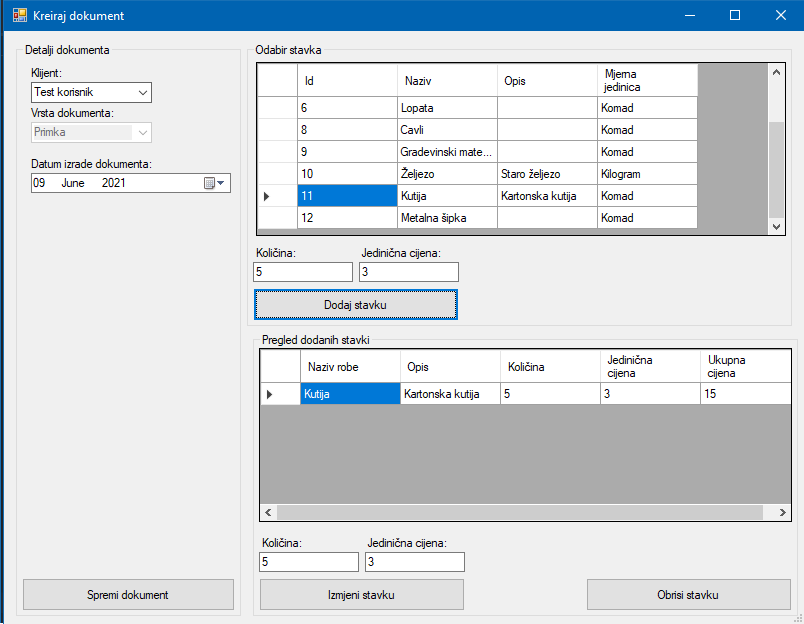

Prozor nova primka sadrži kontrole za dodavanje robe kao stavku primke. "Detalji dokumenta" nude na odabir klijenta od kojeg je primka primljena. Odabir "Vrsta dokumenta" je isključen pošto kreiramo primku i nije potrebno mijenjati vrstu dokumenta. "Odabir stavka" prozor prikazuje svu robu na skladištu, te se odabirom robe, unosom količine, jedinične cijene i klikom na tipku "Dodaj stavku" stavka dodaje u primku. Stavke primke se pojavljuju u donjem prozoru i imaju zapisanu unesenu količinu i jediničnu cijenu, te automatski izračunatu ukupnu cijenu.
Dodanim stavkama je po potrebi moguće mijenjati količinu i jediničnu cijenu. Promjena se postiže odabirom stavke, unosom nove količine i jedinične cijene te se sprema klikom na tipku "Izmjenu stavku". Tipka "Obrisi stavku" brise odabranu stavku iz popisa stavki.
Pritiskom na tipku "Spremi dokument" dokument se sprema i biti će prikazan u prozoru pregleda primki.
